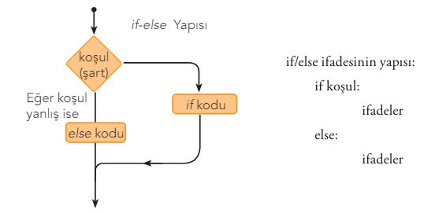

print("Division operation will be performed:")
dividend=int(input("Enter the first number for operation:"))
divisor=int(input("Enter the second number for operation:"))
if divisor!=0:
print(dividend,"/",divisor,"=", dividend/divisor)
else:
print("Division by zero is not possible!")Python - part 2
This is HTML version of the lecture notes. If you’d like to run the sample Python codes please visit this LINK and open file
fef1002-pythonB.ipynb
Conditional Statements
1. if/else statement:
The if statement, which means IF, is used to control conditions based on a specific criterion as the name suggests. The if/else statement works together with the if statement and covers all cases where the if conditions are not met.

2. if/elif/else statement: In Python, multi-way conditional statements can be used with both nested if statements and the if/elif/else statement. The elif statement is short for else if. While simple if/else statements have two different conditions, multi-way decision statements perform operations based on more conditions being met.
value = int(input("Enter an integer between 0 - 2: "))
if value < 0:
print("too small")
elif value == 0:
print("zero")
elif value == 1:
print("one")
elif value == 2:
print("two")
else:
print("too big")
print("Completed!")Loops
1. for Loop: These are loops used for repeating operations a specific number of times. It repeats between start and end values according to the increment amount.
#range (start value, end value, increment/decrement value)
range(0,30,1) # range(30)
range(1,11,2)
range(5)
range(2,7)
range(20,10,-2)
r= range(0,20,2)
print(11 in r)
print(10 in r)
print(r.index(10))
#writes integers from 1 to 9
# 1 2 3 4 5 6 7 8 9
for i in range(1,10):
print(i, end=" ")
print("Finished!")2. while Loop: The while statement determines whether the relevant code lines should be executed. It repeatedly executes the code block as long as the condition is true. When the condition becomes false, the loop ends.
#A while loop that displays how many times it has looped until N/n character is entered from outside
counter = 0
entry= "Y"
while entry!= "N" and entry!= "n":
entry= input("Enter 'Y' to continue – 'N' to exit: ")
if entry == "Y" or entry == "y":
counter += 1
elif entry != "N" and entry != "n":
print("Not a valid entry code! Please enter a valid code.")
print("Number of valid entries=",counter)Loop Exit Commands
The While loop executes the relevant code lines as long as the condition is met. Similarly, the for loop performs the relevant operations within the range. However, it’s possible to exit the loop structure for certain values, in other words, to make changes in the loop operation.
For this, break and continue commands can be used.
When the break statement is used, the relevant code lines are skipped without execution, while when the continue statement is used, the loop starts over to process the next new value.
# A while loop that adds positive numbers entered until a negative number is entered from outside
number = 0
total = 0
print("Enter a number, negative number ends the loop:")
while number >= 0:
number= int(input())
if number < 0:
break # Exiting the loop
total += number
print("Total=", total)#Program that prints odd numbers from 1 to 10
n=0
while n<=10:
# print(n)
n=n+1
if n%2==0:
continue
print(n) #using print(n,end=' ') will print side by sidePython Libraries
Commonly used libraries in Python:
- NumPy:
- Description: A fundamental library for scientific computing. Enables working with multi-dimensional arrays and matrices.
- Usage Area: Mathematical operations, linear algebra, Fourier transforms.
- Pandas:
- Description: Provides powerful tools for data analysis and manipulation.
- Usage Area: Data cleaning, data transformation, working with data frames.
- Matplotlib:
- Description: Enables creating graphs and visualizations.
- Usage Area: Graph plotting, data visualization, histograms.
- SciPy:
- Description: Offers a wide range of functions for scientific and technical computing.
- Usage Area: Statistical analysis, optimization, signal processing.
- scikit-learn:
- Description: A library for machine learning algorithms.
- Usage Area: Classification, regression, clustering, model evaluation.
- TensorFlow:
- Description: A library developed by Google, used for machine learning and deep learning.
- Usage Area: Creating, training, and evaluating deep learning models.
- Keras:
- Description: A high-level neural network library. Works on backends like TensorFlow and Theano.
- Usage Area: Rapid prototyping of deep learning models.
- Requests:
- Description: A simple and user-friendly library for making HTTP requests.
- Usage Area: API calls, fetching data from websites.
- BeautifulSoup:
- Description: Used for parsing HTML and XML files.
- Usage Area: Web scraping, data mining.
- Flask:
- Description: A lightweight web application framework.
- Usage Area: Web application development, creating RESTful APIs.
- Django:
- Description: A full-featured web application framework.
- Usage Area: Developing complex web applications, rapid prototyping.
- Pygame:
- Description: A library used for developing 2D games.
- Usage Area: Game development, interactive applications.
- OpenCV:
- Description: A library used for image processing and computer vision tasks.
- Usage Area: Image analysis, object detection, face recognition.
- NLTK (Natural Language Toolkit):
- Description: A library providing extensive tools for natural language processing (NLP).
- Usage Area: Text analysis, language modeling, part-of-speech tagging.
The choice of library depends on the specific task at hand.
Scientific computing in Python: Numpy
NumPy is a library used in Python that can perform complex mathematical operations, process very large arrays and matrices, and is used in data mining and data analysis. It has similar features to Python lists. The main difference is that numpy arrays must consist of elements of the same type while lists can contain elements of different types. Additionally, numpy arrays are much faster than Python lists and can perform matrix operations.
NumPy package is imported with import numpy as np. With this definition, the numpy package will now be represented by the name np within the program.
import numpy as npCreating Numpy Arrays
Various arrays can be created using the numpy methods given below. Numpy arrays can be used to create one-dimensional (vector), two-dimensional (matrix), and multi-dimensional arrays.
NumPy array/matrix creation methods
| NumPy methods | Description | Example Usage |
|---|---|---|
| np.array() | Converts list to NumPy array. | np.array([1, 3, 5, 7]) print(d) # [1, 3, 5, 7] |
| np.arange(n) | Creates an array of numbers from 0 to n (not including n). | np.arange(5) print(d) # [0 1 2 3 4] |
| np.arange(4, 20, 2) | Creates an array of consecutive numbers in the specified range (4-20) with increment amount (2). | np.arange(4, 20, 2) print(d) # [4 6 8 10 12 14 16 18] |
| np.linspace(0, 5, n) | Creates an array of n equally spaced numbers in the specified range (0-5). | np.linspace(0, 5, 10) print(d) # [0. 0.555 1.11 1.667 2.22 2.778 3.33 3.89 4.44 5.] |
| np.logspace(0, 2, n) | Creates an array of n logarithmic numbers as powers of 10 in the specified range (0-2). | np.logspace(0, 2, 5) print(d) # [1. 3.16227766 10. 31.6227766 100.] |
| np.zeros((n,m), dtype=int) | Creates an array/matrix of zeros (0) with desired dimensions (n rows, m columns) and type. | e = np.zeros((2,3)) print(d) # [[0. 0. 0.] [0. 0. 0.]] |
| np.ones((n,m), dtype=int) | Creates an array/matrix of ones (1) with desired dimensions (n rows, m columns) and type. | d = np.ones((2,3), dtype=int) print(d) # [[1 1 1] [1 1 1]] |
| np.full((n,m), a) | Creates an array/matrix filled with value a of desired dimensions (n rows, m columns). | d = np.full((2,3),6) print(d) # [[6 6 6] [6 6 6]] |
| np.repeat(a, (n)) | Creates an array of n elements with repeating numbers (a). | e = np.repeat(3,4) print(e) # [3 3 3 3] |
| np.eye(n, dtype=int) | Creates an n*n identity matrix. | d = np.eye(3, dtype=int) print(d) # [[1 0 0] [0 1 0] [0 0 1]] |
| np.trace(d) | Returns the trace (sum of diagonals) of a matrix. | print(np.trace(d)) # 3 |
| np.random.rand(n) | Creates an array of n random (floating-point) numbers between 0-1. | d = np.random.rand(5) print(d) # [0.12 0.27 0.32 0.41 0.54] |
| np.random.rand(n,m) | Creates an array/matrix of random (floating-point) numbers between 0-1 with n rows, m columns. | d = np.random.rand((2,3)) print(d) # [[0.54 0.5 0.67] [0.12 0.42 0.99]] |
| np.random.randint(a,size=n) | Creates an n-dimensional array of positive integers up to a. | d=np.random.randint(25,size=3]) print(d) # [9, 15, 7] |
| np.random.randint(a,b, [n,m]) | Creates an n row, m column matrix ([n,m] dimensional matrix) of integers between (a-b). | d=np.random.randint(1,9,[2,3]) print(d) # [[5 7 6] [7 7 6]] |
# Data types must be the same, otherwise they are converted to a single type
X = np.array([50, 25, 350, 400, 450, 100, 550])
print(X)
V=np.array(["ali", 3, 4])
print(V) # integer expressions are also converted to strings- Array elements in Numpy can be accessed with index numbers, just like list elements. The dimension of Numpy arrays is expressed with axes and ranks. These axes in NumPy arrays are expressed with the “axis” parameter. In a 2-dimensional (matrix) array, columns are “axis=0”, rows are “axis=1”, and in a 3-dimensional (3D) array, height (degree) is “axis=0”, columns are “axis=1”, and rows are “axis=2”.
- For those who confuse array dimensions: in 3-dimensional array definition, three “[[[…]]]” square brackets are used, in 2-dimensional array two “[[..]]” square brackets, in one-dimensional array one “[.]” square bracket is used.
ndarrayis an n-dimensional array, and different properties of an ndarray type array can be learned using the methods given in the table below.
| NumPy methods | Description | Example Usage |
|---|---|---|
| ndarray.dtype | Returns the type of the array. | a=np.arange(6) print(a.dtype) # int32 |
| ndarray.ndim | Returns the dimension of the array. | print(a.ndim) # 1 |
| ndarray.shape | Shows the dimensional shape of the array. | b=np.zeros((3,7)) print(b.shape) # (3,7) |
| ndarray.size | Returns the number of elements (n x m) in the array. | print(b.size) # 21 |
| ndarray.reshape(n, m) or ndarray.resize((n,m)) | Converts a one-dimensional array into an n row, m column matrix. That is, reshapes the array. | d = np.arange(6) A = d.reshape(2,3) print(A) # [[0 1 2] [3 4 5]] |
| A.ravel() or A.flat | Converts matrix A to a one-dimensional array. | d = A.ravel() #d=[0 1 2 3 4 5] |
| A.T or A.transpose() | Takes the transpose of matrix A. That is, swaps its rows and columns. | c = A.T print(c) # [[0 3] [1 4] [2 5]] |
| np.mean() | Returns the average of array elements. | d = np.array([1,2,3,4]) Avg = d.mean() print(Avg) # 2.5 |
| np.sum() | Adds all elements of the array. | T = d.sum() print(T) # 10 |
| np.prod() | Multiplies all elements of the array. | T = d.prod() print(T) # 24 |
| np.cumsum(axis= ) | Performs cumulative addition operation on elements (rows for axis=1) in the given axis. | d = np.array([[1,2,3],[4,5,6]]) t = d.cumsum(axis=1) print(t) # [[ 1 3 6] [ 4 9 15]] |
| np.cumprod(axis=) | Performs cumulative multiplication operation on elements (rows for axis=1) in the given axis. | c = d.cumprod(axis=1) print(c) # [[ 1 2 6] [ 4 20 120]] |
| ndarray.max(axis= ) | Returns the element with the largest value in the given axis. | d.max(axis=1) # [3,6] # returns the largest value in each row of matrix d. |
| ndarray.min(axis= ) | Returns the element with the smallest value in the given axis. | d.min(axis=1) #[1,4] # returns the smallest value in each row of matrix d. |
| ndarray.argmax(axis=) | Returns the index number of the element with the largest value in the given axis. | d.argmax(axis=1) #[2,2] # returns the index number of the largest value in each row of matrix d. |
| ndarray.argmin(axis=) | Returns the index number of the element with the smallest value in the given axis. | d.argmin(axis=1) #[2,2] # returns the index number of the largest value in each row of matrix d. |
| np.add() | Adds two arrays / matrices. | T = np.add(d,t) print(T) #[[ 2 5 9] [ 8 14 21]] |
| np.copy() | Copies all elements of the array to another array. | C = np.copy(T) print(C) #[[ 2 5 9] [ 8 14 21]] |
| np.sort() | Sorts the elements of the array. | S=np.array([[20, 40, 4.56], [5, 77, 0.17]]) print(np.sort(S), np.sort(S.T), sep=“” ) |
# - Selecting array elements
y = np.random.randint(100, size=(3, 5))
# Selecting any row of the array
# 1st row
first_row = y[0]
print("First row", first_row)
# 1st column
first_column = y[:,0]
print("First column", first_column)
# 1st and 2nd column
first_and_second_column = y[:,0:2]
print("First and second column: \n", first_and_second_column)t = np.arange(30)
print(t)
print(t[3:])
print(t[:3])
print(t[1:6])
print(t[1::6])
print(t[::-2])
print(t[4::-2])Data Analysis in Python: Pandas
Pandas is a Python library designed for data analysis and manipulation, built on top of NumPy. It works with two fundamental data structures: Series and DataFrame. Series are used for holding and processing data in single-dimensional arrays, while DataFrames are used for multi-column tabular data.
The Pandas package is imported with import pandas as pd. With this definition, the pandas package will now be represented by the name pd within the program.
import pandas as pdSeries: These are one-dimensional array-like objects that can store data of any type and can be labeled. Each element in a Series gets an index value. The index value of the first element in the Series is zero.
# filtering can be done within series
series = pd.Series([10,15,20,25,30,35])
print(series[series>20]) #printing numbers greater than 20
print(series.unique()) #unique values in the series
print(series.value_counts()) #prints how many times each value repeats in the series
grades = {"Mathematics":70,"Data_Analysis":90,"Operations_Research":96,"Statistics":60}
grades = pd.Series(grades)
print(grades*1.05) #5% increase added to grades
print(np.sqrt(grades)) #square root of grades takenDataFrame: These are objects that represent Series in multiple dimensions. It’s an electronic spreadsheet structure containing row index labels, column names, and cell values. DataFrames are similar to Excel sheets. Each column in a DataFrame can contain values of different data types.
students_dict = {
"school_no": pd.Series([101,110,606],
index = ["Ayse","Fatma", "Betul"]),
"average":pd.Series([90,95,85],
index=["Ayse","Fatma", "Betul"]),
"department":pd.Series(["Business","Economics","Mathematics"],
index=["Ayse","Fatma", "Betul"]),
"birth_year":pd.Series([2000,1999,1998],
index=["Ayse","Fatma", "Betul"]),
}
table = pd.DataFrame(students_dict)
print(table)
print(table[table["average"] < 95])Data Import
For a machine learning application, you may need to work with very large datasets containing many rows and columns. Data can be obtained from a database, an Excel file, or a text file. The Pandas library provides ease of use by converting datasets in different file formats into DataFrame structures.
#CSV = pd.read_csv()
#JSON = pd.read_json()
#HTML = pd.read_html()
#MS EXCEL = pd.read_excel()
#SQL = pd.read_sql()
data = pd.read_csv('files/vgsales.csv', encoding="utf-8")
print(data.head()) # Shows first few rows of the data
print(data.info()) # Shows general information about the data
print(data.describe()) # Shows statistical summary of the dataData Manipulation
data.isnull() #is there null in the data (cell by cell)?
data.isna()
data.isnull().any(axis=0) # are there any nulls?
data.isnull().sum() #how many empty (missing data) are there in columns?
#deleting missing data
data.dropna(axis=0, how="any", inplace=True) #delete rows with empty cells and modify data dataframe
data2=data.dropna(axis="index", how="any") #when we perform the operation without assigning to data2 dataframe, it doesn't change data dataframe, only shows the operation
print(data.isna().any())
print(data.shape)data = pd.read_csv('vgsales.csv', encoding="utf-8")
print(data.isna().any())
print(data.shape)
"""let's run these again so that the changed data dataFrame returns to its initial state"""#filling missing data
numeric_columns = data.select_dtypes(include=['number'])
data.fillna(numeric_columns.mean(),inplace=True) #will only fill numeric ones
data.fillna("unknown publisher", inplace=True) #since only publisher column has missing data now, we filled it this way#Getting Columns and Rows from Data Table
data.head() #first 5 rows of dataset by index
data.head(3) #first 3 rows of dataset
data.tail() #last 5 rows of dataset by index
data.tail(2) #last 2 rows of dataset
data[200:301] #rows between 200-301
data.sample(3) #random 3 samples
data.sample(frac=0.05) #Brings random 5% from dataset
data["Name"] #only name column
data["Publisher"].head() #first 5 rows of publisher column
data.Publisher #only publisher column but it's not always good to get it this way because column names might have spaces causing errors
data[["Name","Publisher"]]
data[["Name","Year"]].head(7)
data[data.Year >= 2010].head(5)
data[(data.Year >= 2002)&(data.Year <=2018)].head(20)
type(data) #dataFrame
type(data.Publisher) #series
type(data[["Name","Publisher"]]) #dataFrame# Creating subset from dataset
data.iloc[:5] #first 5 records of dataframe
data.iloc[:5,:3] #first 3 columns of first 5 records of dataframe
data.iloc[3,1] #cell at index 3 record's index 1 column
data.iloc[100:110,3:5] #genre and year of games between 100-110
data.iloc[:,3:5] #genre and year of all gamesdata[(data["Global_Sales"]>10)]["Publisher"] #publishers of records with Global_Sales greater than 10 million
data[(data["Global_Sales"]>10)]["Publisher"].count() #how many games total meet the condition
data[(data["Global_Sales"]>10)]["Publisher"].value_counts() #how many games each publisher made in the list meeting the condition
data[(data["Global_Sales"]>10)]["Publisher"].sum() #concatenated elements in the list meeting the condition
data[(data["Global_Sales"]>10)]["Publisher"].value_counts(normalize=True) #percentage distributions
data[(data["Genre"]=="Sports" ) & (data["Global_Sales"]>3)]["Publisher"] #publishers of sports games that sold more than 3 million
data[(data["Publisher"]=="Electronic Arts" ) & (data["Global_Sales"]>3)]["Genre"].value_counts()#Data analysis
print(data["Global_Sales"].sum()) #sum of Global_Sales column
print(data["Global_Sales"].mean()) #mean of Global_Sales columnData Visualization in Python: Matplotlib
Matplotlib is a drawing library designed for data visualization and graphics, developed based on NumPy. The Pylab library under Matplotlib bears considerable similarity to Matlab graphing commands.
Matplotlib package is imported with import matplotlib.pyplot as plt. With this definition, the matplotlib package will now be represented by the name plt within the program.
import matplotlib.pyplot as plt
#to show graphs below in jupyter without opening a new page
%matplotlib inlineBasic Usage
# A simple line graph example containing x and y data points
x = np.arange(6)
y = x**2
# Creating the graph
plt.plot(x, y)
# Showing the graph
plt.show()Graph Size and Resolution
Output quality can be controlled by adjusting the graph’s size and resolution.
# Adjusting graph size and resolution
plt.figure(figsize=(10, 5), dpi=100)
plt.plot(x, y)
plt.title('Graph Size and Resolution') # Adding title
plt.show()Graph Types
1. Line Graph: Line graphs are mostly used to show changes in data over time.
#Drawing line graph
years=np.arange(2018,2022)
gpa=[3.2, 2.9, 3.5, 3.8]
plt.plot(years, gpa)
plt.ylabel("GPA")
plt.xlabel("Years")
plt.show()years=[2018, 2019, 2020, 2021]
gpa=[3.2, 2.9, 3.5, 3.8]
gpa2=[2.7, 2.2, 1.8, 3.1]
plt.plot(years, gpa, label="student1")
plt.plot(years, gpa2, label="student2")
plt.legend(loc="lower left")
plt.ylabel("GPA")
plt.xlabel("Years")
plt.axis([2018,2021,0,4])
plt.show()#Graph formatting
plt.plot(years, gpa2, "o", label="student2") # using any of " o * p s ^ " will show markers instead of lines
plt.plot(years, gpa2, "o-", label="student2") # connects the markers
plt.plot(years, gpa, ":b^", label="student1") # marks points with blue triangles and connects with dots2. Pie Chart: Pie charts are used to show proportions of categorical data.
#Drawing pie chart
shares={"A":20, "B":10, "C":40, "D":30}
print(shares.keys())
print(shares.values())
plt.pie(shares.values(), explode=[0,0,0.1,0], labels=shares.keys(), shadow=True, autopct="%1.1f%%")
plt.show()3. Bar Graph: Bar graphs are used for comparing categorical data.
#Drawing bar graph
people=["Ahmed", "Michael", "Python", "Jupyter"]
salaries=[2.5, 1.1, 3.9, 1.8]
plt.bar(people, salaries)
plt.title("Salary Graph")
plt.show()data=np.random.random(size=100)*100
data
x_axis=np.arange(100)
plt.bar(x_axis, data)
plt.show()
data=np.random.random(size=10)*100
data
height=np.arange(10)
plt.barh(data, height)
plt.show()4. Scatter Plot: Scatter plots are used to see if there is a correlation between values on the axes.
#Drawing scatter plot
ages=[3.5, 2.5, 1.5, 5, 4, 1, 2, 3, 4.5, 2]
words=[45, 30, 10, 100, 80, 3, 35, 55, 67, 15]
scatter=plt.scatter(ages, words, c=ages, s=np.array(words)*10)
plt.colorbar(scatter)
plt.show()5. Histogram: Histograms are used to show data distribution.
#Histogram
hist_data=np.random.normal(size=1000)
hist_data
plt.hist(hist_data, bins=50)
plt.show()References
- Python Official Documentation
- Fundamentals of Programming with Python
- Van Rossum, Guido. “Python Programming Language.” Python Software Foundation, 2023.
- Sorhun, E. “Machine Learning with Python.” 2021.
- Çobanoğlu, Bülent. “Python for Everyone.” Pusula, 2020.
- McKinney, Wes. “Python for Data Analysis.” O’Reilly Media, 2017.
- Gowrishankar, S., & Veena, A. “Introduction to Python programming.” Chapman and Hall/CRC, 2018.
- Mitchell, Ryan. “Web Scraping with Python.” O’Reilly Media, 2015.
- Kaggle Dataset